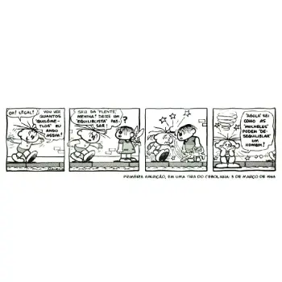
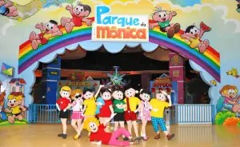

Curiosities
First Comic
During the first strips published by Mauricio, in 1959, the main characters were Franjinha and Bidu. Soon after, other names emerged that are well known to the public to this day. Despite in be extremely adored, readers began to complain about the lack of girls in the stories. That was how the comic artist decided to be inspired by the personality of his second daughter, Mônica Sousa, and created a character with the same name.
Characters' names
Characters Inspired by Children: Many of the characters were inspired by the children of Mauricio de Sousa. Mônica was created from the cartoonist's daughter, and Mauricio himself serves as inspiration for Seu Sousa. Magali is also based on one of Mauricio de Sousa's daughters, Magali Spada. Marina, the class's beloved artist. She, like the previous ones, has the same name as her persona real, Marina Takeda, who works as director of editorial content at Mauricio de Sousa Produções. Between others.
Thematic parks
Theme Parks: There are Turma da Mônica theme parks in some Brazilian cities. The park da Mônica, for example, is a space dedicated to children with toys and attractions inspired by in the characters.
Adaptations
Turma da Mônica, already renowned in comics as one of the most beloved in Brazil, expanded its reach beyond the pages, also winning the hearts of the public through adaptations for television and cinema. These transitions to other media allowed characters created by Mauricio de Sousa reach an even wider and more diverse audience. One of the most recent milestones in this universe of adaptations is the film "Turma da Mônica: Laços". Released in 2019, the feature film directed by Daniel Rezende brought to life the graphic novel of the same name written and illustrated by brothers Vitor and Lu Cafaggi. The film was a critical and public success, receiving praise for both the fidelity to the essence of the characters and the technical quality of the production.